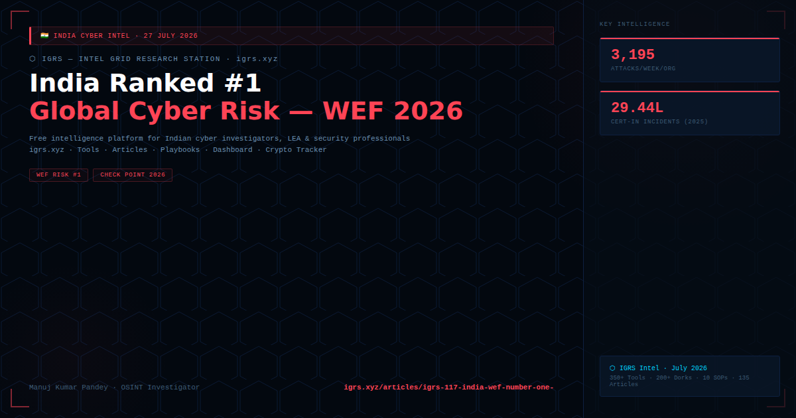

The World Economic Forum Global Risk Report 2026 has ranked cybersecurity as India's number one national risk — ahead of economic downturns, climate disasters, and armed conflict. Check Point Software's concurrent 2026 Cyber Security Report provides the operational data: Indian organisations face an average of 3,195 cyber attacks per week, with education institutions bearing the highest load at 7,684 attacks per week.
| Metric | Figure | Source |
|---|---|---|
| Weekly attacks per Indian org | 3,195 | Check Point 2026 Report |
| Education sector attacks/week | 7,684 per organisation | Check Point 2026 |
| CERT-In incidents (2025) | 29.44 lakh (2.94 million) | CERT-In Annual Report |
| Cyber losses (2025) | ₹20,000+ crore | I4C/MHA data |
| WEF national risk ranking | #1 (above climate, economy, conflict) | WEF Global Risk Report 2026 |
| Botnet penetration | 17.5% of Indian orgs (global avg: 10.2%) | Check Point 2026 |
| Ransomware increase | +31.4% year-on-year | Check Point 2026 |
| Cloud breach proportion | 62% of all detections | DSCI Telemetry 2026 |
AI's role: As Lotem Finkelstein (VP Research, Check Point) notes: "AI is changing the mechanics of cyber attacks, not just their volume." Tools once reserved for elite APTs are now democratised — enabling personalised, coordinated, scalable attacks at a fraction of the previous cost.
| Sector | Attacks/Week | Primary Vector |
|---|---|---|
| Education | 7,684 | Ransomware, credential theft |
| Government | High | APT, state-sponsored espionage |
| Banking/Finance | High | Phishing, vendor compromise, ransomware |
| Healthcare | Elevated | Ransomware, data theft |
| Manufacturing | Growing | OT/ICS attacks, ransomware |
India's rapid digitisation — 1.4 billion users, UPI processing billions of transactions monthly, Aadhaar-linked digital identity ecosystem — creates an unparalleled attack surface. Limited cybersecurity budgets in education and government, legacy systems, and a massive base of first-time internet users combine to create high-value, low-resistance targets for global cybercriminals.
CERT-In mandatory reporting: All cyber incidents must be reported to CERT-In within 6 hours of detection. Critical infrastructure operators must also notify NCIIPC. DPDP Act 2023 adds 72-hour mandatory breach notification to Data Protection Board once fully operationalised (May 2027).